Six geometry nodes describe a shape by sweeping a 2D outline along a path: a
lathe, a spiral, a screw, two kinds of tube, and VRML97's own
Extrusion. Each holds the parameters and generates its vertex
arrays with opengl_extrusions, a NumPy geometry generator with no OpenGL in it.
What comes back is an ordinary indexed triangle mesh, so these draw through the same path as every other piece of geometry in the scene: core profile and compatibility profile alike, lit, shadowed, textured, pickable, depth-sorted, and eligible for the pass-level instancing batcher.
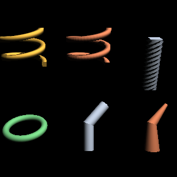
tests/extrusions_shapes.py.
Top: a Lathe and a Spiral of the same parameters --
the lathe's section stays upright as it climbs, the spiral's tilts with the
climb -- and a Screw. Bottom: a toroid, a
PolyCylinder and a PolyCone.| Node | What it sweeps | Reach for it for |
|---|---|---|
Lathe |
a contour around the z axis, its plane staying radial | screw threads, spiral ramps, washers, turned parts |
Spiral |
a contour along the helix itself, its plane square to the path | springs, coiled wire, handrails |
Screw |
a contour along z while turning | drill bits, twisted columns, augers |
PolyCylinder |
a circle along a path, constant radius | pipes, cables, rails, barriers |
PolyCone |
a circle along a path, a radius at every point | tapering pipes, tree branches, rockets |
Extrusion |
VRML97's cross-section along its spine | anything a .wrl file asks for |
The rotational sweeps read their contour in the r-z plane: x is distance out from the axis, added to the sweep radius, and y is height.
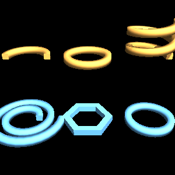
Lathe's fields does, on one square
section. Top: totalAngle of π and of 2π, then
deltaZ 0.6 over two turns -- a rising coil. Bottom:
deltaRadius 0.4, which spirals outward instead;
sides 6, a hexagonal ring; and sides 48, a
smooth one.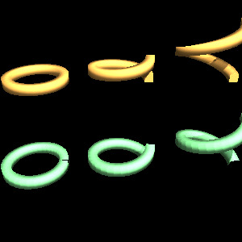
Lathe, bottom row Spiral; left to right
deltaZ of 0, 0.5 and 1.4 over one turn. Flat, the two are
identical; the steeper the climb, the further apart they get.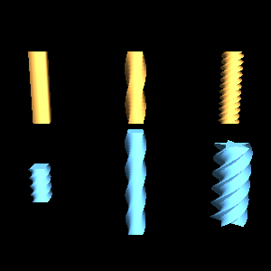
totalAngle of 0 (a plain bar), π and 6π,
all of the same square section over the same length. Bottom: the same twist
over a short startZ..endZ and over a long one, and a
five-pointed star section -- which is what makes an auger.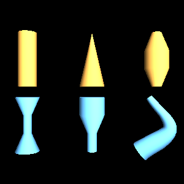
PolyCylinder), a taper to nothing, and a barrel. Bottom: a waist,
a stepped profile, and a taper following a curved path.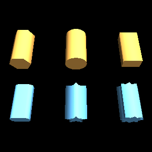
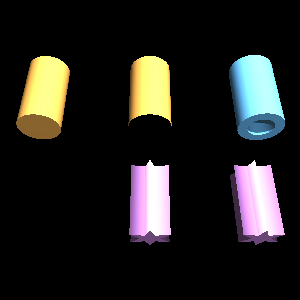
caps TRUE, caps FALSE, and a contour
with a hole -- the cap has the hole in it, because caps are tessellated rather
than fanned. Bottom: an open contour, which makes a sheet with no inside and
no cap; then the same star-section cap refined two ways.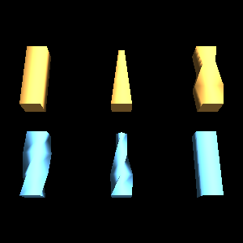
from OpenGLContext.scenegraph.basenodes import Appearance, Material, Shape
from OpenGLContext.scenegraph.extrusions import Lathe
washer = Shape(
geometry=Lathe(
contour=[(0, -0.1), (0.3, -0.1), (0.3, 0.1), (0, 0.1)],
startRadius=1.0, sides=48,
),
appearance=Appearance(material=Material(diffuseColor=(0.8, 0.6, 0.2))),
)| Field | Default | What it does |
|---|---|---|
normals | 'edge' |
'facet' for flat faces and hard edges, 'edge'
for smooth around the contour and creased across each ring,
'path_edge' for smooth both ways -- see below |
texture | 'normalized' |
0..1 both ways, 'arc_length' for model units, or
'' for no texture coordinates |
solid | TRUE |
whether the back faces may be culled |
The generated mesh is cached on the scenegraph cache and rebuilt when a field
it depends on changes, so a slider driving sides costs one
regeneration per move rather than one per frame.
normals does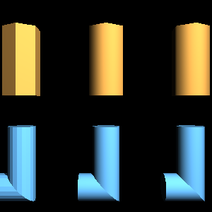
tests/extrusions_normals.py. Left to right in
each row: facet, edge, path_edge. The
geometry is identical; only the normals differ.Top, a hexagonal tube: facet gives six flat faces and six hard
edges, edge blends them so a six-sided tube shades like a cylinder
while its silhouette stays a hexagon, and on a straight run
path_edge has nothing further to smooth. Bottom, a round tube round
a corner: facet reads as a stack of rings, edge stays
smooth around the tube and creased at the corner -- which is what a mitred pipe
joint should look like -- and path_edge rounds the corner off
visually as well, for something meant to bend smoothly.
edge is the default and usually the right answer: curves in the
outline stay smooth, corners in the path stay sharp.
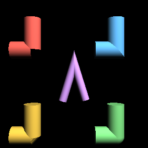
tests/extrusions_joins.py. Clockwise from top
left: raw (the runs come apart), angle (a mitre,
with the seam where its two surfaces meet), round (an elbow) and
cut (a bevel). The purple hairpin is a mitre at a corner sharp
enough that miterLimit turns it into a bevel.join | At a corner |
|---|---|
'raw' | each run swept on its own, ending square -- the tube comes apart. For a chain of separate objects; never for a pipe. |
'angle' | a mitre, in the plane bisecting the corner, with the outside stretched to reach it. Continuous, and the default. |
'cut' | a bevel: each run ends square and one flat band joins them. Does not reach as far past the corner as a mitre, and the band is shaded as the facet it is. |
'round' | an elbow: the ring is turned through the
bend over roundSegments steps, so the corner is the tube itself
rotated and the contour keeps its size. |
miterLimit (default 4) bounds how far a mitre may stretch as a
multiple of the tube's own reach. Without one, the outside of a nearly-reversed
corner runs away to a spike.
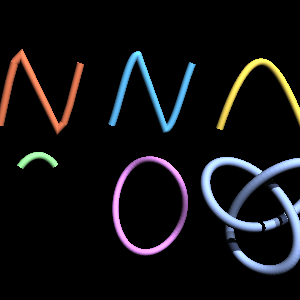
tests/extrusions_curves.py. A Catmull-Rom
sampled coarsely and finely, a Bézier, a B-spline, a loop through the
vertical, and a trefoil knot swept as a closed path.A path given as a list of points is a decision already made -- how many, and
where. opengl_extrusions.curves samples a curve to a
chord-error tolerance instead, so the samples land where the curvature
is:
from opengl_extrusions import catmull_rom
from OpenGLContext.scenegraph.basenodes import PolyCylinder
path = catmull_rom([(0, 0, 0), (2, 1, 0), (4, 0, 1)], tolerance=1e-3)
rail = PolyCylinder(path=path, radius=0.1, frames='rmf')frames: 'up' or 'rmf''up' keeps the contour aligned to one fixed direction. Simple
and predictable, and what a road or a railing wants. Where the path runs
parallel to that direction there is nothing left to align to, and the
node reports it rather than producing a frame that spins.
'rmf' carries each frame from the one before it by the smallest
rotation that turns the old direction onto the new one. No reference direction
means no direction that breaks it, so this is the one for a cable, a knot, a
loop, or any path that might point anywhere. It is the default for
PolyCylinder and PolyCone.
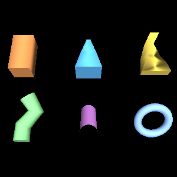
tests/extrusions_vrml97.py. Scale along the
spine, a taper, an orientation turning as it travels, a curved spine, a tube
with no caps, and a closed spine.The node's own fields, to ISO/IEC 14772-1:1997 clause 6.23:
crossSection, spine, scale,
orientation, beginCap, endCap,
ccw, convex and creaseAngle.
The cross-section is read in the x-z plane, as the
specification writes it, and is oriented at each spine point by that
specification's Spine-aligned Cross-section Plane -- axes taken from the
spine's own neighbours rather than from any reference direction. A
crossSection or spine whose last point repeats its
first is closed: the surface has no seam there, and a closed spine has
no ends to cap.
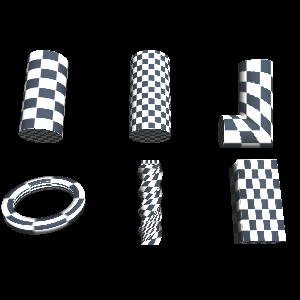
tests/extrusions_gallery.py texture_parameter. Where the squares
stretch is where the mapping stretches.Two families. 'normalized' and 'arc_length' describe
the sweep's own parameterisation -- around the contour and along the path, in
0..1 or in model units. Beside them are the twelve generated modes the
GLE tubing library offers, named
vertex/normal, optionally model, then
flat/cyl/sph:
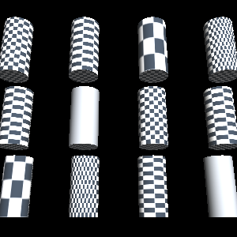
normal_sph and normal_model_sph give a constant v on
a straight tube, whose normals all lie in the contour plane.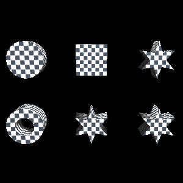
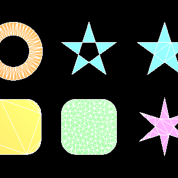
tests/extrusions_tessellation.py; the white
lines are the triangle edges. Top: a letter O (two rings, one a hole), a
pentagram by the odd rule (the doubly-wound middle comes out empty), the same
by the nonzero rule. Bottom: a rounded square plain, the same refined to a
maximum triangle area, and a star refined to a minimum angle.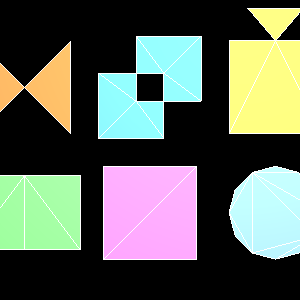
tests/extrusions_preprocessing.py: an outline
crossing itself, two rings crossing, a T-junction, two shapes sharing an edge,
near-duplicate vertices, and a ring closed by a repeated point.End caps are tessellated, which is why an extrusion of a contour with holes gets a cap with the holes in it. The tessellator is a public API in its own right -- a constrained Delaunay triangulation with exact-sign predicates, which copes with outlines that cross themselves, holes, coincident vertices and T-junctions:
from opengl_extrusions import tessellate
result = tessellate([outer_ring, hole_ring], winding='odd', min_angle=30.0)
result.points # (V, 2)
result.triangles # (T, 3), counter-clockwiseWhich parts come out solid is decided by a winding rule: odd
(the default, under which nested rings alternate), nonzero,
positive, negative or abs_geq_two.
min_angle and max_area refine the mesh; an angle
target spends triangles only where the outline forces thin ones, while an area
target subdivides evenly throughout.
Any mesh with glTF-named vertex arrays becomes scenegraph nodes with no file
and no parsing in between, through
OpenGLContext.scenegraph.frommesh:
from opengl_extrusions import extrude, circle
from OpenGLContext.scenegraph.frommesh import shape_from_mesh
pipe = extrude(circle(0.1, 16), [(0, 0, 0), (0, 1, 0), (1, 2, 0)])
scene.children.append(shape_from_mesh(pipe, appearance=steel))This is the form the glTF loader already produces. A
generated primitive is not merely glTF-shaped: it is the same
arrangement of arrays PBRMesh holds, which is the node
loaders/gltf builds for every primitive of every .glb
the engine reads. Attribute names, component types, index type and memory layout
all line up, so generated geometry and loaded geometry arrive at the render pass
indistinguishable from one another -- and shadow, instance, pick and sort by the
same code.
Nothing is copied at the boundary. PBRMesh
normalises attributes with asarray(..., float32) and
ascontiguousarray, and indices with
asarray(..., uint32), every one of which is a no-op on an array that
already holds that dtype and layout -- which is what these generators commit to
producing. The array the generator filled is the array the VBO uploads.
The reading is structural, so this is not limited to one library: anything
exposing attributes and indices works, whether it came
from a procedural tool, an editor, or a script of your own.
tests/extrusions_shapes.py -- every swept node side by sidetests/extrusions_joins.py -- the four join styles, and the miter limittests/extrusions_curves.py -- splines, adaptive sampling, closed loopstests/extrusions_vrml97.py -- the VRML97 node's fieldstests/extrusions_normals.py -- the three shading modes on two subjectstests/extrusions_tessellation.py -- tessellated faces with their triangles drawntests/extrusions_gallery.py -- one figure per parameter, which
is what the figures above are captured from. Run
python tests/extrusions_gallery.py --list for the set, then
name one to see it.